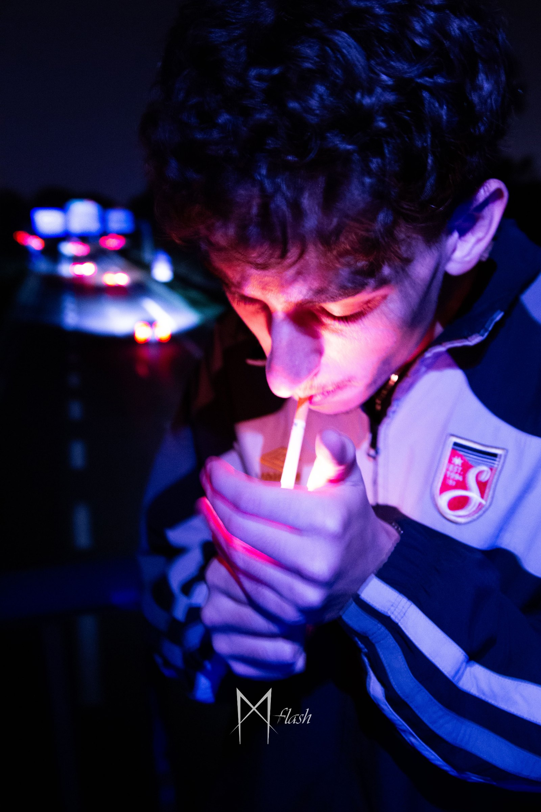
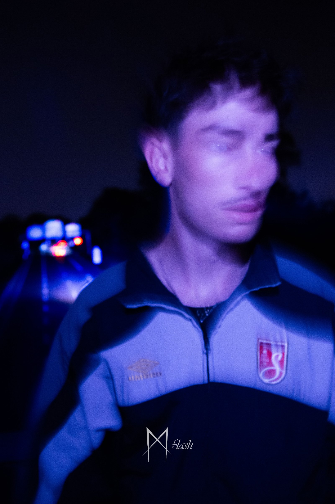
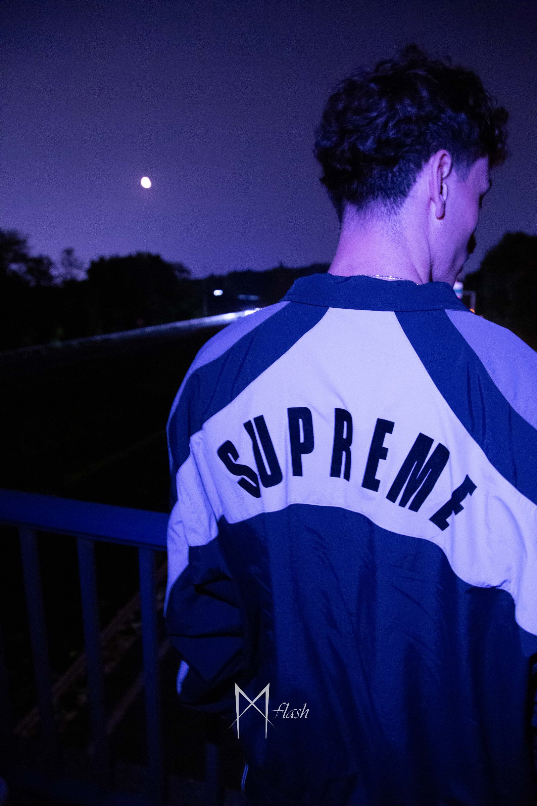
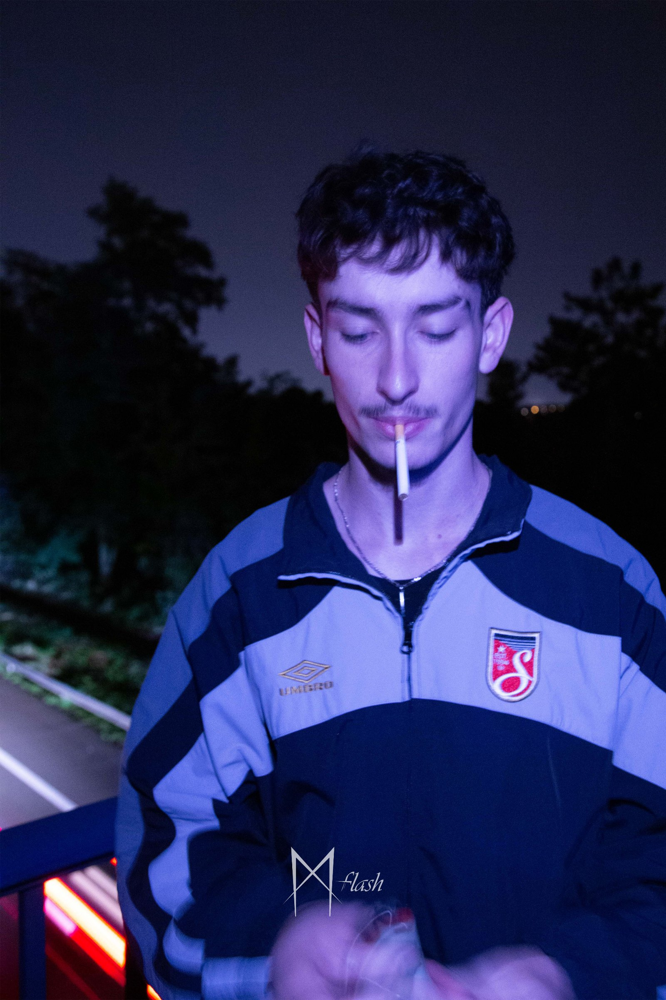

Photo · 7 septembre 2025
Ultra Violet




Le projet
En quelques mots
Pour ce projet photographique, la prise de vue a été réalisée depuis un pont, jouant sur les perspectives et la dynamique du trafic. Un important travail de post-production et de retouche colorimétrique a ensuite été mené pour lui donner une atmosphère atypique dominée par des nuances de violet en contraste avec le rouge du feu et des voitures. L'ensemble crée un univers visuel surréaliste et cinématographique.
Crédits & liens
Autour du projet
Outils
Logiciels utilisés
 Lr
LrLightroom
Développement photo